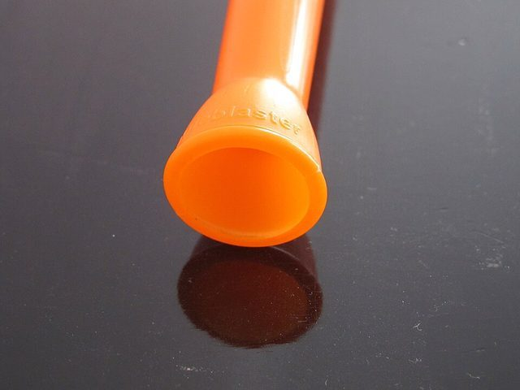
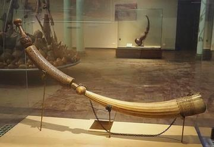

Home / Crossroads and Golden Ages / Africa: Southern Africa
Playable heritage gameVuvuzela
The vuvuzela is a long plastic horn that produces a loud monotone, widely associated with South African football crowds. The player buzzes the lips into a mouthpiece, and the volume and pitch change with air pressure and technique.



How to play
- Four notes of the horn are lit along it, the higher ones nearer the mouthpiece.
- A band of breath runs from the mouth to the note you strike, and rings of sound leave the wide bell.
- Long notes swell quickly: strike close to the beat and let them ring.
Rules at a glance
- A call is a line of long notes, each struck close to its beat.
- Long notes swell slowly: strike on the beat and let them ring.
- The round ends when the last note has been judged; the score is the share of the best possible.
About the tradition
In a crowd thousands of them sound together as one steady drone.
Origins
Usually placed in the era of Crossroads and Golden Ages (about 500 to 1500), although its exact origins are uncertain, within the cultural world of Africa: Southern Africa.
Credits
- Tradition: the vuvuzela; calls written for this game
- Photo: DisillusionedBitterAndKnackered, CC BY-SA 3.0, source on Wikimedia Commons
- Text: CC BY-SA 4.0, World Heritage Games.
Sources

Get the app
Vuvuzela is coming to the App Store and Google Play. One app, many traditions, no account needed.
Coming to theApp StoreComing toGoogle Play
More games to play



More from South Africa


Kaapse Klopse
Malaysia +1 · Street and playground games
Kati
Kenya +1 · Street and playground games
Ndebele geometric wall painting
South Africa · Crafts and makingPlay preview · in the Paper & Paint of the World app